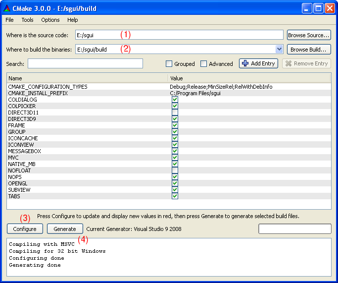

SGUI
Hacking SGUI
The SGUI build system
The sgui library uses a CMake based build system. CMake is a cross platform
tool to generate platform dependend files for compiling source code (e.g. it
can generate a Makefile or an MSVC solution file).
For more information on CMake, please consult
the CMake website.
Since the demo programs need special files and the Windows® backend needs
the freetype DLL, the build tree stub is contained within the source tree.
Compiling on Unix-like systems
To compile and build everything, issue the following commands from within the
source directory:
cd build
cmake ..
make
If you replace "cmake" in the above commands with "ccmake", you will get a
text based user interface. Pressing [c] will configure the build system and
give you a screen with lots of compilation options. Pressing [c] again and
then [g] generates the build system and you will return to the shell where
you can run make to compile sgui.
SGUI can easily be cross compiled using a special CMake cross-compilation
toolchain file. Toolchain files for 32 bit and 64 bit Windows® via Mingw
are provided with the source tree. Simply replace the above commands with the
following to cross compile for 32 bit Windows®:
cd build
cmake .. -DCMAKE_TOOLCHAIN_FILE="../CMake/mingw.cmake"
make
Alternatively, use "mingw64.cmake" for a 64 bit Windows® build.
Note:
Since mingw cross compiling has so far only been done on Arch
Linux, it might require minor adjustments of the mingwXX.cmake file to
point to the correct compiler location.
Cross compiling for other architectures will require some fiddling with
CMake toolchain files, if not even porting of SGUI itself. If something
breaks that should not break, please let me know.
Compiling on Windows®

On Windows®, start the CMake gui program. A screenshot of the CMake GUI
can be seen above.
There should be a field labeled "Where is the source code" (1). Enter
the path where this README file is located.
In an other field, labeled "Where to build the binaries" (2), enter the
path to the "build" directory within the directory where this README file is
located.
When clicking configure (3), a dialog should pop open where the target
build system can be selected (e.g. which version of MSVC to use) and the main
dialog should be filled with lots of configuration options that you can see
above (initially displayed in red). Pressing "configure" (3) again and
then "generate" (4) should generate the build system (e.g. An MSVC
Solution file) which can then be used to compile sgui.
Note:
Some effort has been put into making SGUI compile with VisualStudio®,
on Windows®, however it is not a priority target. It should work in
general, but it is only tested occasionally.
It has been observed that sometimes CMake generates an error message, but
no error actually occoured and re-running "configure" and "generate"
created a working build system.
Depending on your versions of Windows® and VisualStudio®, you may
want do disable Direct3D® 11 in the compile configuration.
Compilation options
When running cmake the following build options are available:
- COLDIALOG Compile with color selection dialog. Default: ON
- COLPICKER Compile with color picker widget. Default: ON
- MEMCANVAS Enable or disable the memory canvas implementation.
Default: ON. This option might not be disabled if the backend
implementation for the current platform needs the memory canvas. If this
is set to OFF, the definition SGUI_NO_MEM_CANVAS is set via the
preprocessor.
- MVC Compile with model object for MVC widgets. Default: ON
- OPENGL Enable or disable OpenGL® support. Default: ON
If this is set to OFF, the definition SGUI_NO_OPENGL is set via the
preprocessor.
- NOFLOAT Can be used to disable all internal use of floating point
data types and arithmetic. Default: OFF. If this is set to ON, the
definition SGUI_NO_FLOAT is set via the preprocessor.
- FRAME Default ON. If set to OFF, the frame widget is not compiled.
- GROUP Default ON. If set to OFF, the group widget is not compiled.
- ICONCACHE Default ON. If set to OFF,
the icon cache is not compiled.
- ICONVIEW Default ON. If set to OFF, the icon view widget is not
compiled.
- MESSAGEBOX Default ON. If set to OFF, the message box is not
compiled.
- NATIVE_MB Default ON. If set to OFF, the native message box is
not compiled.
- SUBVIEW Default ON. If set to OFF, the sub view widget is
not compiled.
- TABS Default ON. If set to OFF, the tab widget is not compiled.
- NOPS For all the above functionallity, noop functions that always
fail are generated if they are disabled to avoid linking problems.
If set to OFF, there will be no noop implementations. Default ON.
- DIRECT3D9 Compile with Direct3D® 9 support. Default: ON
If set to OFF, SGUI_NO_D3D9 is defined via the pre processor.
- DIRECT3D11 Compile with Direct3D® 11 support. Default: ON
If set to OFF, SGUI_NO_D3D11 is defined via the pre processor.
Some options may or may not be available, depending on whether the target
system supports them in the first place, or wether the target system needs
them and cannot have them disabled.
Also note that some options might be interdependend, e.g. the color dialog
uses the color picker widget, so when disabling the widget, the dialog will
also not be available.
Depending on the target operating system, the following definitions are set
via the preprocessor:
Generating Doxygen reference
If Doxygen is available on a system, running the target doxydoc
processes the Doxyfile.in file to generate a propper Doxygen input file
and runs Doxygen on the input file.
The Doxygen output is written to the directory doxydoc in the output
directory tree.
Installing & generating binary packages
On Unix® like systems, make install can be used to install the SGUI
library. By default, headers are installed to /usr/local/include and
the compiled, stripped library to /usr/local/lib.
To change the prefix from /usr/local to something differnt, the
variable CMAKE_INSTALL_PREFIX has to be altered.
To install to a different root directory,
make DESTDIR=<root>install can be used to install to
<root>/<prefix>/lib and
<root>/<prefix>/include instead.
When cross compiling for Windows®, the target pack
(i.e. make pack) can be used to generate a zip archive with
Windows® binaries, example programs, documentation, etc... like the one
that can be downloaded from the SGUI website.
The source directory tree
The library is split into several modules, each in a dedicated subdirectory,
that are then compiled into a single library:
- core The library core. Contains basic widget data structure, widget
handling, window system abstraction, font rendering, helper data
structures, etc.
- widgets The GUI widgets. Contains only the implementations of the
individual widgets.
- dialogs The GUI dialog windows. Contains only the implementations
of the individual dialog windows.
Each of those modules contains an include/ directory with headers,
a src/ directory with source files and a CMakeLists.txt.
Other than that, there are few more sub directories:
- build The output directory, see below.
- CMake Contains CMake files (e.g. mingw cross toolchain config)
- doc The hand written HTML documation you are reading right now
- extras Contains example and demo programms
- tests Contains unit tests
In addition, the source directory contains a CMakeLists.txt, a doxygen
Doxyfile the textfiles LICENSE and README as well as the
beforementioned package.sh.
The combined include directories, the doc directory, the
extras directory and the generated doxygen documentation end up in the
development package.
Everything inside the source tree ends up in the source package.
The LICENSE and README files are added to every package.
The output directory tree
The output directory initially contains the following entries:
- font This directory contains the TTF font file required by the
example and demo programs.
- win_dep This directory contains additional dependencies for
the Windows® build (currently only FreeType binaries and headers).
- runvalgrind.sh This script runs valgrind on a sample program using
the given valgrind supression file.
- valgrind.supp A valgrind supression file that's supposed to hide
reported memory leeks inside the X11 XIM functions, and Mesa3D.
When building SGUI, a lot of temporary clutter is generated by CMake and make.
The interesting directores are bin and lib, the former
containing executables and dynamic libraries and the later containing static
libraries.
Previous
Back to index
Next